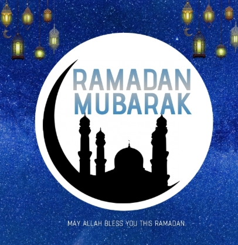
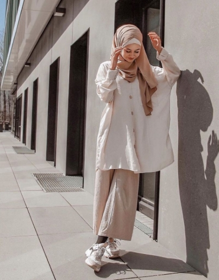
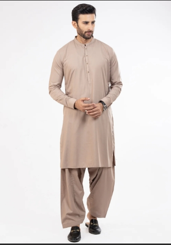
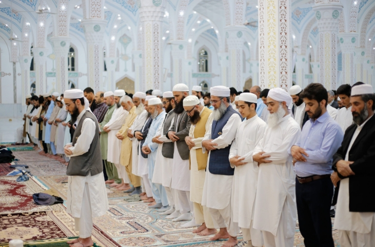
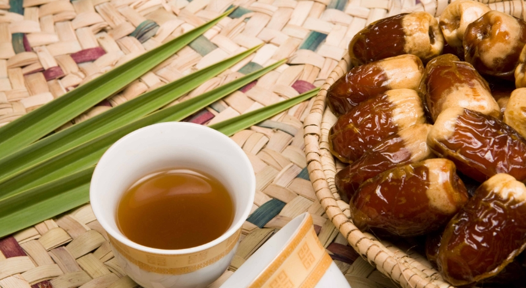

Hover over this image with your mouse to view the image! Ramadan is the ninth month of the Muslim calendar and is considered a holy month
of fasting. It begins and ends with the appearance of the crescent moon. Fasting during
Ramadan is one of the five pillars of Islam and is a way for believers to show their thanks
to God and reflect on the teachings of the Quran. Muslims often give chariety more often, attend
tarawill that are prayers at night, fast from sunrise to sunset, pray 5 times each day and
read the Quran more often. Ramadan usually lasts for about 29 to 30 days and Muslims
celebrate Eid Al-Fitr after the last day of Ramadan.

Hover over this image with your mouse to view the image! The temperature is usually humid
and hot during the whole year in Saudi Arabia,
so it has been recommended to not wear many layers. Also, Muslims in Saudi Arabia dress
modestly, so they usually wear clothes that are oversized instead of clothes that cling
to the contour of your body. Men and women are required to cover as much skin as possible.
T-shirts are acceptable when the sleeves are below your elbow, and women are not allowed to
wear shorts, but men can wear shorts that cover their knees.


Hover over this image with your mouse to view the image with colors!
When praying, Muslims pray towards the direction of the Qibla which
is where the kaaba is located. Muslims pray 5 times a day and the prayers
are called Fajr, zuhr, Asr, Maghrib, and lastly Isha. Salat al-fajr is prayed
at dawn or at any time before sunrise. Salat al-zuhr is prayed during the middle
of the day. Salat al-’asr is prayed during the afternoon and salat al-maghrib
is prayed after sunset.
Lastly, salat al-’isha is prayed between the time from sunset to midnight.

Hover over this image with your mouse to view the image with colors!
Starting from a young age, Muslims are taught how to read the
Qu’ran, and the Qu’ran is a holy book. In Islam, the only one God is Allah.
The Qu’ran is written in Arabic and it contains many words that have been
believed to be stated by Allah(God). Also, the Qu’ran states the truth and
guidance for every human being. The Qu’ran has stories about each prophet
from the past, there are 114 chapters (surahs), and the chapters are divided
into 30 sections. The Qu’ran has about 604 pages in most of the copies of this
holy book and whoever reads the Qu’ran will earn some benefits.

Hover over this image with your mouse to view the image with colors!
Muslims in Saudi Arabia offer generosity and hospitality to strangers,
friends, and their family. The simplest expression of hospitality is coffee
and its preparation alone is an intricate cultural tradition. Coffee is often
served in small cups along with dates and sweets. Another gesture of
hospitality is the burning of incense (oud) to welcome guests. Muslims
are very generous because they know that they are blessed and they have
an obligation to share with other people who are less fortunate compared to themselves.
